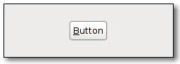

| Top |
GimpButtonGimpButton — A GtkButton with a little extra functionality. |
 |
GObject ╰── GInitiallyUnowned ╰── GtkObject ╰── GtkWidget ╰── GtkContainer ╰── GtkBin ╰── GtkButton ╰── GimpButton ╰── GimpColorButton
GimpButton adds an extra signal to the GtkButton widget that allows to distinguish a normal click from a click that was performed with modifier keys pressed.
void gimp_button_extended_clicked (GimpButton *button,GdkModifierType state);
Emits the button's "extended_clicked" signal.
button |
a GimpButton. |
|
state |
a state as found in GdkEventButton->state, e.g. GDK_SHIFT_MASK. |
“extended-clicked” signalvoid user_function (GimpButton *gimpbutton, GdkModifierType arg1, gpointer user_data)
This signal is emitted when the button is clicked with a modifier key pressed.
gimpbutton |
the object that received the signal. |
|
arg1 |
the state of modifier keys when the button was clicked |
|
user_data |
user data set when the signal handler was connected. |
Flags: Run First